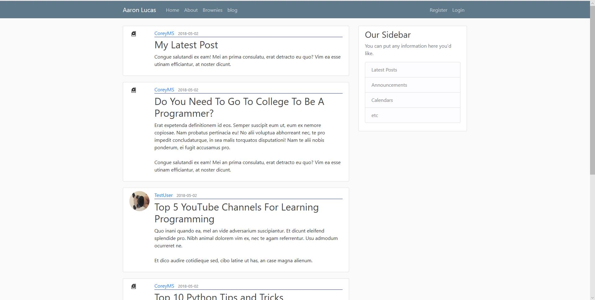

Creation of a blog
After completing my book on raspberry PI4, I decided to create a flask website using Database to get a better understanding of full stack development. Im currently learning how to Use Flask and Django in the mean to time to upgrade my skills in software development
Learned Using the course based on MsCorey, using both SQLAlchemy, user authecation & Flask